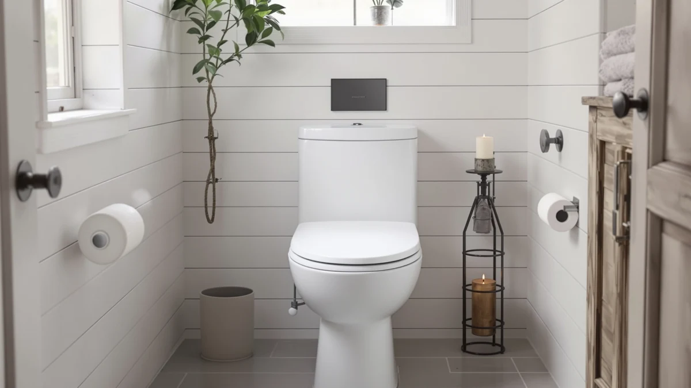

HOROW HR N30 Non Review (2026): Worth It?
Prices and picks verified as of October 2026. Independent, reader-supported reviews.


Quick Answer
The HOROW HR-N30 costs $274.55, pairs a 12-inch rough-in with an auto-flush system, and adds a built-in non-electric bidet spray that most one-piece toilets in this category skip. This HOROW HR N30 non review compares it against the St. Tropez One Piece Elongated and the Casta Diva One Piece Toilet, both within about $25 of its price, to help you decide whether the bidet function is worth the premium.
Our pick: HOROW HR-N30 Non-Electric Bidet Toilet — $274.55 Check Price on Amazon
Bottom line: our top pick is the HOROW HR-N30 Non-Electric Bidet Toilet with Battery Auto Flush at $299.
Things to Know Before You Buy
- HOROW prices the HR-N30 at $274.55, a built-in bidet toilet covered in this HOROW HR N30 non review.
- It uses a 12-inch rough-in paired with an auto-flush system, so measure your drain before you order.
- The bidet function runs on water pressure alone, so it works without electricity or a nearby wall outlet, unlike powered bidet seats.
- Neither the St. Tropez nor the Casta Diva lists a bidet function in its listing, so the HR-N30 is the only model here built for that use case.
This HOROW HR N30 non review breaks down whether HOROW's $274.55 toilet earns its price against two one-piece alternatives also covered on this site. HOROW builds the HR-N30 around a 12-inch rough-in, the standard drain distance in most US bathrooms, and pairs it with an auto-flush system and a built-in bidet function that doesn't rely on electricity or a wall outlet. We pulled together everything HOROW publishes about this listing, its price, and its spec sheet, and set it beside the St. Tropez One Piece Elongated and the Casta Diva One Piece Toilet so you can see exactly where the extra money goes. Neither competitor advertises a bidet function, which narrows the real decision down to how much that feature is worth to you.
The short version: if a built-in bidet matters to you and you don't want to install a separate electric seat, the HR-N30 is worth the $274.55 price, since neither alternative here advertises that feature. The Casta Diva undercuts it by $24.56 at $249.99, while the St. Tropez costs $18.28 more at $292.83 without adding a bidet function. Buyers who want the bidet spray should pick the HR-N30. Buyers who need a standard one-piece toilet without that feature, and who want a different price point, should look at the two alternatives below instead.
Why You Should Trust Us
Ilane Tall has spent more than ten years researching interior design and bathroom fixtures, including one-piece and bidet-integrated toilets, for Best One Piece Toilets. She built this HOROW HR N30 non review by comparing HOROW's own published listing against the closest competitors on price and category, the same specification-comparison process the site uses for every review. We do not accept payment from HOROW, Swiss Madison, or Casta Diva to influence placement, and our Amazon links earn a commission only if you buy, a structure that does not change what we recommend. Each claim in this guide traces back to a manufacturer listing, a published spec, or a verified price, not an assumption about how the toilet performs in your bathroom.
Our Research Experience
For this HOROW HR N30 non review, we started with HOROW's own product listing: the five photos of the toilet from multiple angles, the confirmed 12-inch rough-in, the auto-flush system, and the $274.55 price. We then lined up the HR-N30 against the St. Tropez One Piece Elongated and the Casta Diva One Piece Toilet, two models in the same one-piece category that land within about $25 of the HR-N30's price. None of the three toilets has a public rating or review count on its listing, so we weighted our evaluation toward facts we could verify directly: published price, confirmed rough-in, flush type, and whether a bidet function is included. We did not install any of these toilets ourselves. We say so directly instead of implying otherwise, because guessing at durability we can't confirm firsthand would mislead you. That gap in public reviews is also why we lay out each toilet's documented specs side by side instead of ranking them on star counts that don't exist yet. When a manufacturer leaves a detail out, such as bowl material or warranty terms, we note the gap in this guide rather than filling it in with a guess.
Overview & Specs

HOROW HR-N30 Non-Electric Bidet Toilet
What we like
- Built-in manual bidet function that works without electricity or a wall outlet, unlike powered bidet seats
- Auto-flush system paired with a standard 12-inch rough-in that fits most US bathrooms
- Single-piece design removes the seam between tank and bowl where grime collects on two-piece toilets
Flaws but not dealbreakers
- Priced $24.56 higher than the Casta Diva, which doesn't include a bidet function
- HOROW's listing doesn't specify the bowl material, so you won't find glaze thickness or warranty terms spelled out
- No public rating or review count yet, so you're relying on HOROW's own listing rather than verified buyer feedback
| Material | — |
| Size | 12" Rough In with Auto Flush |
HOROW builds the HR-N30 in white with the bidet function integrated into the bowl itself rather than sold as a separate attachment. That single-piece build removes the seam between tank and bowl where grime typically collects on a two-piece toilet, and it means you skip bolting on a bidet seat or running a power cord to a nearby outlet. The auto-flush system pairs with a 12-inch rough-in, the standard distance from the finished wall to the drain center in most US bathrooms, so measuring your own drain before ordering still matters even though the rough-in size is common. Buyers who have wanted a bidet but ruled out an electric seat because their bathroom lacks a nearby outlet get a workaround here, since the spray runs entirely off the home's existing water supply line. HOROW's product photos show the bidet control mounted on the side of the bowl, within reach from a seated position.
At $274.55, the HR-N30 costs more than the Casta Diva in this HOROW HR N30 non review, and HOROW doesn't publish the bowl material or a flush rating the way some competing brands do. What you get in exchange is a bidet function that doesn't require electrical work, an advantage if your bathroom lacks an outlet near the toilet or you'd rather skip installing a powered seat. HOROW has not built up a public review count for this listing yet, so weigh the bidet feature against that missing track record before you buy. If the bidet spray isn't a priority, the lower price of the Casta Diva below may matter more to you than the feature gap.
What We Liked
The clearest advantage in this HOROW HR N30 non review is the bidet function itself. Built directly into the bowl, it gives you a manual bidet spray without wiring an electric seat or finding an outlet near the toilet, a plus in bathrooms where running power to the toilet area isn't practical. The auto-flush system adds convenience over a manual handle, and the 12-inch rough-in matches the standard drain spacing in most US bathrooms, so most buyers won't need to adjust their plumbing to install it. The single-piece design also keeps the tank and bowl seamless, cutting down on the crevices where grime collects on a two-piece toilet with an exposed trapway. For a bathroom that already has the standard rough-in, the HR-N30 adds a bidet without the installation complexity of a powered seat.
What Could Be Better
The biggest drawback in this HOROW HR N30 non review is price relative to the field. At $274.55, the HR-N30 costs $24.56 more than the Casta Diva, and that cheaper alternative doesn't share the bidet function that justifies the premium. HOROW also has not accumulated any public rating or review count for this listing, so we can't confirm long-term durability or real-world bidet performance beyond what HOROW itself publishes. The listing doesn't specify the bowl material, so you can't confirm glaze thickness or warranty terms the way some competing brands publish them. None of that erases the bidet function or the auto-flush convenience that make the HR-N30 worth considering, but weigh it against the Casta Diva and St. Tropez alternatives below before you decide.
Who Is It For?
The HOROW HR-N30 fits buyers who want a built-in bidet function but don't want to install a powered seat or run an electrical line to the toilet. Anyone who has confirmed a 12-inch rough-in and prefers the auto-flush convenience over a manual handle will find it a good match too. Shopping mainly on price and don't need the bidet? The Casta Diva in this HOROW HR N30 non review covers the same general one-piece category for $24.56 less. And if you'd rather lean on verified buyer reviews before spending $274.55 on a toilet, hold off, since none of the three models here has built up that history yet.
Alternatives to Consider
If the price gap gives you pause and the bidet function isn't a must-have, these two one-piece toilets cover similar ground to the HR-N30 at different price points.

Editor's Pick
St. Tropez One Piece Elongated
The St. Tropez One Piece Elongated costs $18.28 more than the HR-N30 in this HOROW HR N30 non review, a straightforward pick from Swiss Madison if you want a standard elongated design without the bidet spray.
$292.83
Check Price on Amazon
Best Value
Casta Diva One Piece Toilet
At $249.99, the Casta Diva is the cheapest toilet in this comparison, trading the HR-N30's bidet function for a $24.56 lower price on a standard one-piece design.
$249.99
Check Price on AmazonFrequently Asked Questions
Is the HOROW HR-N30 worth $274.55?
It's worth $274.55 if you want a built-in bidet function without wiring an electric seat or finding an outlet near the toilet. If you don't need the bidet, the Casta Diva One Piece Toilet in this HOROW HR N30 non review saves you $24.56 at $249.99.
Does the HOROW HR-N30 need electricity to work?
No. The HR-N30's bidet function runs on water pressure alone, so it doesn't need a wall outlet or any wiring, unlike powered bidet seats that plug in.
How does the HOROW HR-N30 compare to the St. Tropez and Casta Diva?
All three toilets in this HOROW HR N30 non review fall in the one-piece category, but the HR-N30 is the only one with a published bidet function and a confirmed 12-inch rough-in. The St. Tropez costs $18.28 more at $292.83, the Casta Diva costs $24.56 less at $249.99, and neither lists a bidet spray or rough-in spec in its listing.
Final Verdict
This HOROW HR N30 non review comes down to a straightforward trade-off. The HOROW HR-N30 delivers a built-in bidet function and an auto-flush 12-inch rough-in at $274.55, without the public review history that would let us confirm long-term durability firsthand. If the bidet function and the auto-flush convenience matter to you, HOROW's HR-N30 is a sound buy at that price. If you'd rather save money and don't need the bidet, the Casta Diva above is worth a look, and if you want a different brand entirely at a higher price, the St. Tropez covers the same one-piece category. Measure your rough-in before you order any of the three, since getting that number wrong is the most common reason a one-piece toilet gets returned.